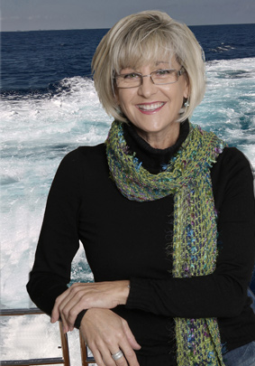
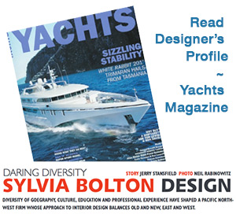
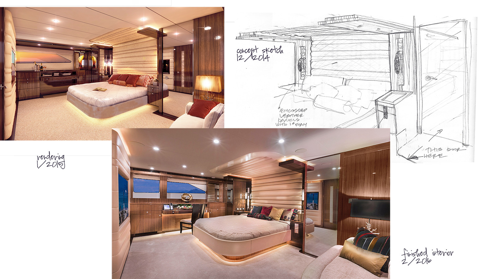
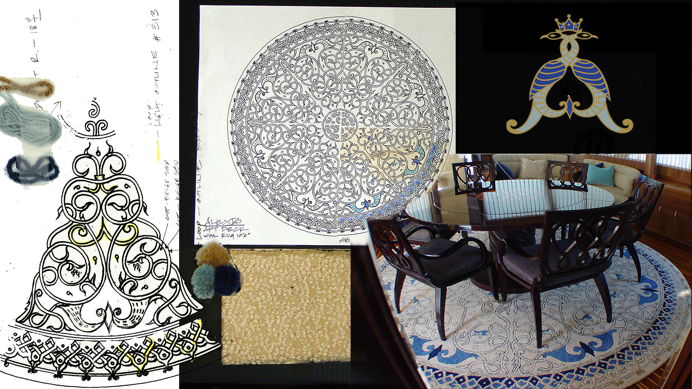
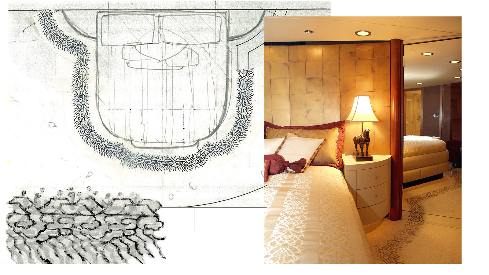
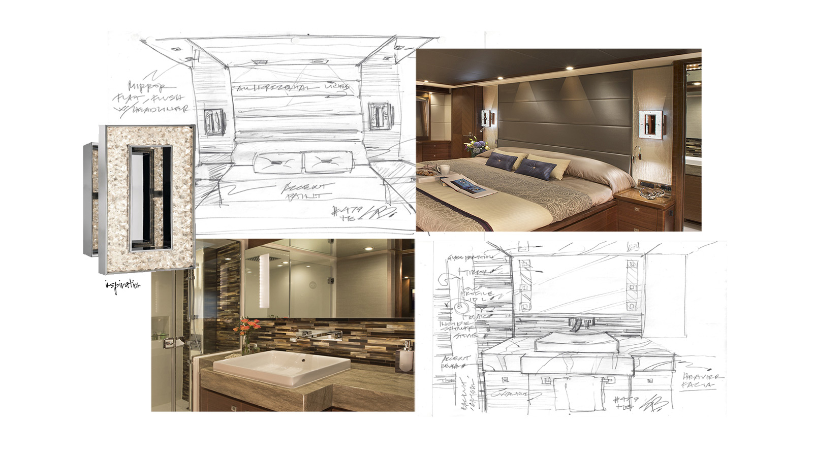
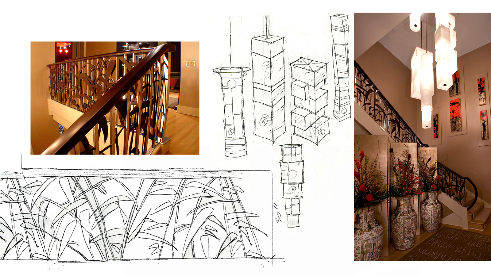
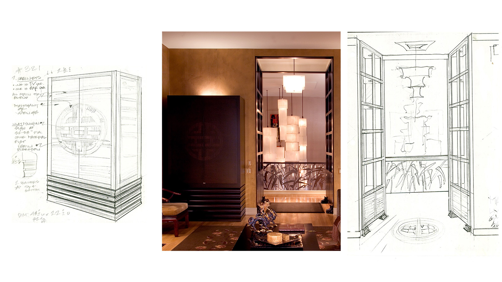
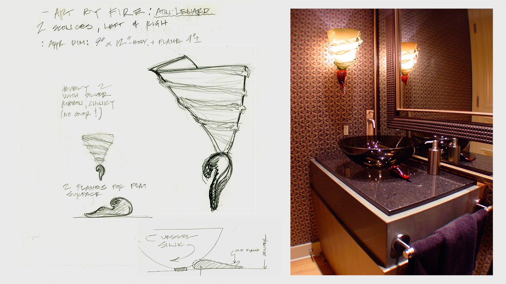
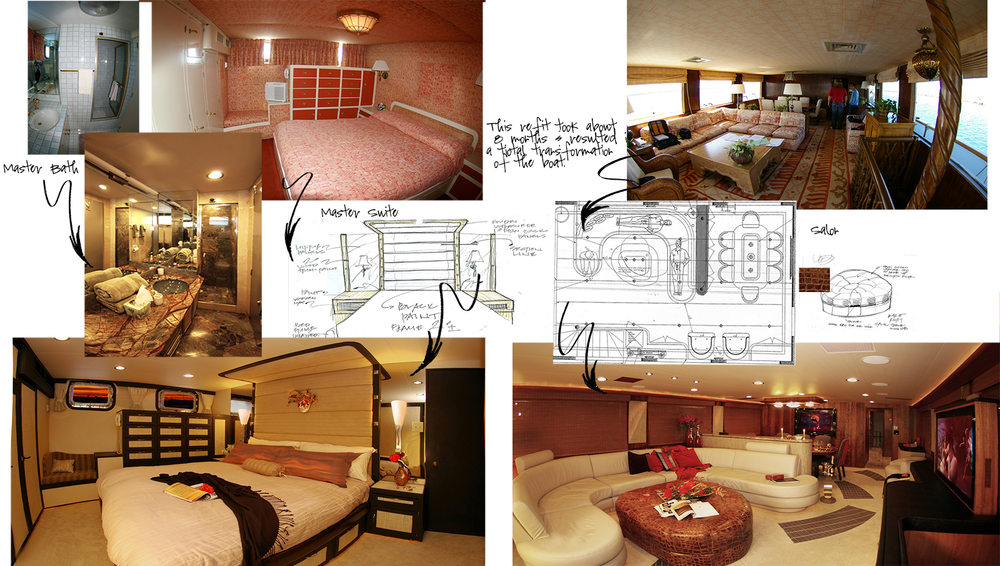

The Studio

With over 30 years of interior design experience in Italy and USA, Sylvia Bolton is well qualified in all aspects of creative design. Sylvia Bolton brought her international perspective to Seattle in 1993, forming her own design studio. Sylvia's fine art and industrial design background contributes to her ability to create original spaces, sculpting each project to the specific taste of the client. She works with shipyards and clienteles in North America and around the World. Her projects and often reviewed and published in the leading yachting magazines.
Boat Reviews & Mentions

- Juanky (Showboat)
- Juanky (Yachting)
- Anaya (Yachts International)
- Bravo 88 (Showboat)
- Bravo 78 (Southern Boating)
- Bravo 88 (Yachting)
- Bravo 78 (Yachts International)
- Bravo 88 (Yachts)
- Escapade (Passagemaker)
- Mazu (Boat International)
- Mazu (Showboats)
- Serenity (Yachting)
- Alexis (Boatbuilder)
- Horizon Vision (Juanky - Yachts International)
Process of Design
Our design process starts with understanding your vision. We explore your style, personality and taste — listening carefully so that we understand what you are looking for. Next we create sketches and layouts of the spaces and furnishings. Once the basic theme is determined, we can produce renderings of the design or conceptual presentations so you can see how the finished spaces will look. We assemble material boards to illustrate color palettes and demonstrate the tactile feel and finishes. On a yacht, space is usually scarce and always an important commodity. Our understanding of how to use space to its full potential will improve both the livability and appeal of the interior.
Sylvia's swift free-hand sketching (a tribute to her fine art training), combined with architectural drawings and digital renderings skills, give her the ability to ensure the designs are precisely defined and construction is accurately implemented. We work with trusted boat builders, craftsmen and vendors. We manage the ordering, delivery, and installation of all interior components related to our projects. Our design sources contribute the most appropriate equipment, furniture and accoutrements from around the world — and if they don’t exist, we promptly design them and have them fabricated for you. We work with each client to bring together all essential elements — spaces, illumination, equipment, furnishings and art — sculpted into a harmonious whole. We bring your visions to life.







